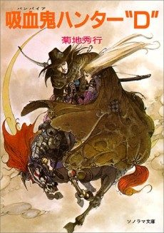

Vampire Hunter D: Bloodlust
バンパイアハンターD
D, a half-vampire hunter, is hired to rescue a girl kidnapped by a vampire.
After the anime, read the light novel from Volume 4.
7.9AniList score
—Animeter, no votes yet
1film
Rate it or report where you stopped
Is it worth watching?
The drop map is for series. Rate the film above to add to its Animeter score.
More like Vampire Hunter D: Bloodlust
 Original8.5
Original8.5
 Manga Ch. 1588.2
Manga Ch. 1588.2
 Own end8.0
Own end8.0
 Manga Ch. 567.8
Manga Ch. 567.8
 Manga Ch. 3408.9
Manga Ch. 3408.9
 Done9.0
Done9.0
 Original8.5
Original8.5
 Unclear7.1
Unclear7.1
 Novel ahead8.2
Novel ahead8.2
 Original8.6
Original8.6
 Unclear6.6
Unclear6.6
 Original8.1
Original8.1